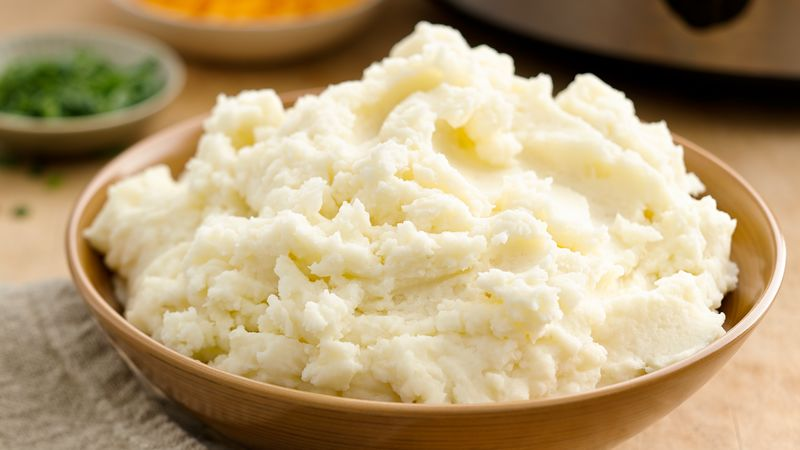

Ultimate Mashed Potatoes

Description:
Who doesn't love potatoes? I mean, come on. Fry ‘em, dice ‘em, slice ‘em, or bake ‘em, there’s nothing better than a well-seasoned iteration of a potato.
This time, we’re mashing ‘em.
And not only are we mashing them, we’re loading ‘em up with all sorts of tantalizing flavors to give you, what we proudly call, the Ultimate Mashed Potato.
It’s an experience, trust us.
Credit For the Recipe:
Jody Tixier & Alexis Deboschnek from the Tasty Team
Ingredients:
- 2 lb yukon gold potato
- ½ cup whole milk
- ½ cup heavy cream
- 8 cloves garlic, crushed
- ½ cup unsalted butter, cubed, cold
- 2 teaspoons kosher salt
- Freshly ground black pepper
- Chive, finely chopped, for serving
Steps:
- On a cutting board, peel the potatoes. Place the potatoes in a large bowl of cold water after peeling to avoid discoloration.
- Cut the potatoes into 1-inch (2 cm) cubes.
- Add the potatoes to a large pot and cover with cold water. Bring to a boil over high heat, then reduce the heat to low and simmer for 12 minutes.
- In a small saucepan, bring the milk, heavy cream, and garlic to a simmer over low heat.
- Remove the pot from the heat and strain the cream through a fine mesh sieve.
- Drain the potatoes in a colander and transfer back to the pot.
- Mash the potatoes with a potato masher, potato ricer, or by pushing through a fine mesh sieve with a spatula.
- Add the cubed cold butter and salt. Stir to combine.
- Gradually add the cream mixture to the potatoes, little by little, until fully incorporated.
- Top with freshly ground black pepper and sprinkle with chives and serve.
- Enjoy!